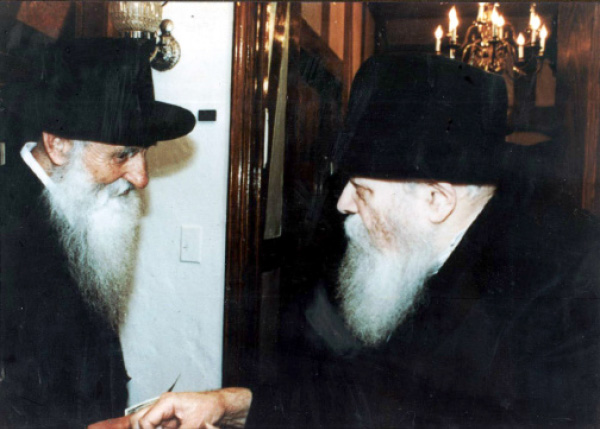

The Youthful Elderly Chassid
R’ Yaakov Peles a”h was youthful despite his age. You could see him until his final day walking the streets of the Kfar going from one activity to the next. He astonished those who were far younger than he was. * His life was one of askanus. He greeted new immigrants in the 60’s, started the yeshivos Tomchei T’mimim in Kiryat Gat and Achei T’mimim in Rishon L’Tziyon, and urged Jews to lead a life of Torah and mitzvos.

Among the illegal immigrants to Eretz Yisroel who sailed on the “Braha Fuld,” was a tall, thin man who came to the shores of Tel Aviv from one of the DP camps in Italy. Aside from his black, fiery eyes and his stormy spirit, he brought no possessions with him to his new country. For several weeks he toured the length and breadth of the country. Only a few weeks went by before the name of the young man who spoke a rich Yiddish with a Bessarabian lilt became famous as the leader of a group of pioneers. This man was none other than R’ Yaakov Peles a”h.
He was born 91 years ago in the town of Teleneshti in Bessarabia to his parents R’ Tuvia and Mrs. Fruma Peles. He was given a pure chinuch in the local shul. When he grew older, he went to Kishinev where there was a big yeshiva and where he learned for a number of years.
Shortly before the outbreak of the Second World War, the yeshiva was closed and he went back home. A short while later the war began and the Soviets conquered the area in which he lived. Consequently, he began wandering from city to city to find refuge. The events of the war brought him to distant Siberia where he remained until the end of the war. In Siberia he worked in constructing factories which had been relocated from the center of the country.
“I worked under the sky in bitter, bone-chilling cold. We suffered from malnutrition. Every day we were given 800 grams of bread and a bit of sugar and tea and that was it,” he wrote in his memoir.
During those years, between the front lines and the labor camp, between hellfire and enemies of Israel, he witnessed many miracles. One of the times that he was in great danger he made a vow. “The travails and dangers and adventures and miracles caused me to contemplate and think deeply. Hashem had saved me numerous times and gave me my life back. For what purpose?
“The feeling grew stronger within me that if Hashem was saving the life of an individual while others did not merit the same, surely Hashem had a particular reason. It can’t be for naught that my life was given back to me despite all the danger. Life took on special significance. That is how the thought of the vow came to percolate in my mind. I vowed that if Hashem would be with me and I would reach the Holy Land, I would dedicate all my strength to my people until the coming of the righteous redeemer speedily …”
R’ Peles left Russia, crossing the border and arriving in Seret, Romania. From there he continued traveling until he arrived in Italy. Although he was broken by his ordeals he started a shul and arranged shiurim for the adults.
He wrote to the Rebbe Rayatz about his activities. The Rebbe responded, “I thank Hashem for His great kindness in saving you from the hands of the wicked. I bless you with the blessing of mazal tov, mazal tov.” He went on to write, “Surely you will make the effort to fulfill the holy mission that Hashem gave to you in strengthening Torah and Judaism in general, and kosher chinuch in particular, and may your heart be strong with trust in Hashem who will provide for you all your material and spiritual needs.”
In those DP camps he met R’ Zushe Wilyamowsky, the Partisan, and R’ Zalman Levin. The three of them formed a friendship and sailed to Eretz Yisroel. On the ship, the three vowed that their goal in making aliya was to work on chinuch for Jewish children.
After staying about half a year in Italy, R’ Peles organized a group of fifty people that he called “Lev Aryeh.” The group sailed to Eretz Yisroel on a ship called the Wingate and which was later renamed Braha Fuld. It was three weeks before Pesach 5706/1946. R’ Peles’ dream was becoming reality.
FROM MOSHAV TO MOSHAV, KIBBUTZ TO KIBBUTZ
Upon arriving in Eretz Yisroel, he attended the Chabad yeshiva in Tel Aviv led by R’ Chaim Shaul Brook. In his free time he began tirelessly working to mekarev children and youth from the immigrant camps to Torah and mitzvos.
After marrying Rochel Malov, he settled in Tel Aviv. He began by teaching in the Sinai school.
“I had seemingly come to my personal promised land,” he wrote in his memoir. “I looked like a Chassid, I had grown a beard, I learned Chassidus, and I taught in the Sinai school, but I still did not have peace of mind. I constantly felt that we had to work with fellow Jews, the survivors of the Holocaust and to rebuild the devastation of the terrible churban, for I had vowed that I would dedicate all my time to our people.
“The turning point was in 5711, shortly after the Lubavitcher Rebbe accepted the nesius. I heard that the Rebbe was writing often to Lubavitcher activists in Eretz Yisroel with the unequivocal demand that the Chabad activity expand more and more. I realized that it is forbidden to sit with folded hands. Then I began working energetically. I knew that rehabilitating the Judaism that had been destroyed could only occur with the establishment of yeshivos and I worked in that direction.”
For many years he went from moshav to moshav, from kibbutz to kibbutz, and from city to city, from the north to the south, to spread Judaism and the wellsprings of Chassidus.
He founded Yeshivas Achei T’mimim in Rishon L’Tziyon. Then he began building Yeshivas Tomchei T’mimim in Kiryat Gat (in 5719) – two magnificent mosdos. An entire book could be written about each one of them. He received many letters from the Rebbe about his work, with instructions and guidance every step of the way.
When R’ Peles visited the Rebbe for the first time in 5722, the Rebbe gave him the honor of addressing the crowd, a highly unusual occurrence! R’ Peles went up to the platform and said briefly, “The Rebbe succeeded in breaking all the barriers between Jews.” The Chassidim saw how this statement gave the Rebbe enormous nachas.
From then on, R’ Peles committed to breaking all barriers between Jews for the express purpose of hastening and bringing the hisgalus of Moshiach Tzidkeinu.
In one of my conversations with him, I asked him what is the best approach to carrying out the Rebbe’s work. He said, with his usual patience, “The approach is as the Rebbe instructed us, ‘Lights of Tohu in Vessels of Tikkun,’ i.e. to take the loftiest matters and bring them into ordinary human intellect. What is that like? A pogrom in a grocery store, which leaves the products scattered all over the place. Although everything is there, it’s hard to find anything. The same is true for us. Although we have everything, we just need to make order out of it rather than shout things to which people won’t be receptive.
“I heard this from the Rebbe on my last visit in Nissan 5751, when the Rebbe cried out ‘do all that you can to bring Moshiach.’”
These two visits to the Rebbe, his first and last, showed him the direction he should take in promulgating Jewish unity and the Geula.
R’ Peles was the first person to bring the Rebbe a key to a city in Eretz Yisroel, something which later became widespread. Since he worked a lot for the yeshiva in Kiryat Gat, he developed good ties with the mayor, Gideon Naor. R’ Peles convinced him to give the key of the city to the Rebbe.
At an impressive ceremony that took place on 18 Elul 5722, the mayor gave the key to R’ Peles who was shortly thereafter going to the Rebbe. He presented it in the middle of the farbrengen and the Rebbe accepted it with much pleasure.
THE REBBE TOOK PART IN THE PRINTING OF HIS BOOK
R’ Yaakov Peles was an outstanding askan and was blessed with many talents. He dedicated his life to the public not only in the area of chinuch but in all aspects of askanus. He was also a speaker people listened to, and a writer.
He was a modest, humble person who lived in very limited circumstances. His simplicity and modesty were a byword. Even in shul, his seat was at the back because of his excessive modesty and humility. He did all his communal work alone without an array of offices, aides and secretaries.
When his friends saw him in his later years standing at his work like a young man, they would ask him to go and rest, for he had done plenty in his lifetime. He would smile and explain, “It is not my desire, but the Rebbe’s desire. The Rebbe once told one of his Chassidim, ‘I have many soldiers but I lack generals.’ When I heard this, I felt compelled to work on inspiring others.”
R’ Peles did a lot to promulgate the verse, “Beis Yaakov lechu v’neilcha b’or Hashem” (House of Jacob we will go with the light of Hashem). He believed that this verse could inspire and ignite flames in the hearts of Jews. He always shouted, “We must extinguish the conflagration in a way of ‘do all that you can,’ and as the Rebbe wrote me, ‘even a hundred times, without exaggeration.’”
He publicized this 40 years ago, after the Yom Kippur War. He called upon people to get out of their complacency and open their eyes and find the truth of Torah and mitzvos and be sanctified by the light of Judaism and Chassidus.
R’ Peles merited special kiruvim (signs of closeness) from the Rebbe. The Rebbe asked him a number of times to read and sing his poems in the presence of thousands of Chassidim at farbrengens. When the Rebbe received a book of his poems, After the Yom Kippur War, the Rebbe sent him $1000 as his share in the expenses. Very few people received such warm reactions from the Rebbe.
It is interesting to note that in this book R’ Peles hints that the Rebbe is the man who would be Moshiach and redeem the Jewish people. This was long before this topic began to be discussed openly among Anash. R’ Peles was the first to publicize this exalted matter and even received the Rebbe’s consent and blessing through his participation in the expenses of publishing the book.
He wrote about this in the introduction to his book, Al Harei HaGalil:
“About twenty years ago, I went to King George Street in Tel Aviv and coming toward me on the pavement was R’ D. Z. Zilberstein. He motioned to me to approach him and said: ‘Listen, I want to tell you something interesting. I was in the US three times and each time I visited the Lubavitcher Rebbe. What do you say? Even though I am not a Lubavitcher, the qualities that the Rambam specifies about Moshiach and all the books that write about the qualities of Moshiach – I found all of this by the Lubavitcher Rebbe.’
“I understood this to be an instruction from heaven with divine providence giving me a new job, the most important one of this time, which is: spreading the teachings of Chassidus and hastening the revelation of Moshiach Tzidkeinu.”
Before 3 Tammuz, he publicized a note on the topic of the identity of Moshiach: “Since we merited such a great neshama in this generation … a Jew whose entire conduct, his entire life is above nature, and we see within him all the qualities that the Rambam enumerates about how Moshiach ought to look, and his name and lineage is from the royal family of Dovid, therefore we pray and plead before Hashem to hasten the revelation of this neshama …”
In 5748, a short time before the passing of the Rebbetzin, R’ Peles stood up at a farbrengen in front of the Rebbe and emotionally announced that since the Rebbe is the one who will be revealed as Moshiach, the matter now depends on us Chassidim, and we need to ask him to be revealed as such.
LOYAL TO HIS VOW UNTIL HIS FINAL DAY
Faithful to the vow he made when he was in Siberia—to dedicate his life to the Jewish people—he did not rest. He sought to convey his messages to all Jews in every way possible. He explained this work as being urgent and vital for the saving of the Jewish people and hastening the Geula: “Dear Brothers and Sisters, we must create an uproar and call out continuously ‘let us go with the light of Hashem,’ only with the light of Hashem until the coming of Moshiach Tzidkeinu!”
It seemed that the more he did, the younger he got. I once asked him how long would he continue his difficult work and when would he relax. He answered me firmly, “All of the activities will continue with greater strength until the final moment of the coming of Moshiach. The moment he comes, I will be released from my work.”
On Shabbos, Parshas Yisro, he attended a Chassidus class given in Beis Menachem in Kfar Chabad. After the shiur he returned to the home of his son-in-law, R’ Levi Yitzchok Ginsberg, where he lived, in order to rest a bit. He went to bed and did not wake up. It was like ‘the kiss of death,’ the death of extraordinary individuals. He was 80 years old.
He was survived by his son Tuvia of Kfar Chabad and four daughters, Mrs. Levkivker of Tzfas, Mrs. Goldberg of Tzfas, Mrs. Ginsberg, and Mrs. Perlstein of Kfar Chabad.
MY FATHER-IN-LAW
By Rabbi Levi Yitzchok Ginsberg
Chassidim do not eulogize, but the Rebbe established the rule that we tell about the departed in order to learn from their good middos, “and the living shall take it to heart.”
Knowing my father-in-law, R’ Yaakov Peles a”h for many years leaves me astounded at his special personality. He was a fearless man of truth who fought with all his might for the things he believed in without looking this way and that to see what people would say, if they agreed or not. Even if they mocked, he did his thing.
For many months, every day, and even for years, in the rain and cold and heat, he would stand for hours at junctions with handwritten signs calling upon the children of Avrohom, Yitzchok and Yaakov to return to the path of G-d under the slogan, “Beis Yaakov Lechu V’Neilcha B’Or Hashem.”
In the years before that, when he went to put t’fillin on with people or to register them for a letter in a Torah etc. he did not suffice with an hour or two, but stood there for entire days, without exaggeration. Far younger people than him were tired long before him. For weeks and months he would sit in Miron and learn from the teachings of Rashbi as they are expounded upon in Tanya.
He founded two yeshivos, one in Kiryat Gat and one in Rishon L’Tziyon, with his ten fingers. Not only did he not take a penny for it, but he even dedicated the reparations money that he and his wife got from the Germans to this cause, 10,000 liros, a huge sum in those days. They used it to buy a lot for the yeshiva in Kiryat Gat. They say that R’ Chadakov said in the Rebbe’s name to some men that one should learn from him how to act.
He was, at the same time, utterly devoted to his family. For himself he sufficed with the minimum and even less than that. The money that he saved he used for his activities and helping others. In pouring rain and harsh heat he would walk every single day – and he did not allow me to ever take his place – to pick up his grandchildren from preschool, to take them to the doctor, etc.
With outstanding devotion which was even extreme, he did everything so that nobody would have to bother about him. He entered quietly and took on his own the little bit he would eat. He did everything so that those around him hardly felt he was there, so as not to bother anyone.
Even in his passing, it was as though he was helped from above, just as it was with his wife nine years earlier, not bothering anyone. It was literally a “kiss of death,” without any trouble to anyone. On Motzaei Shabbos he was buried in Tzfas. In his will he asked that on his gravestone it should say his life’s calling, the verse, “Beis Yaakov lechu v’neilcha b’or Hashem.”
May his soul be bound up in the bond of life and may it be immediately fulfilled that which he constantly wished with great longing and nonstop anticipation, “That Moshiach should come now! Now!” And arise and sing those who dwell in the dust with he among them.
LIKE THE PROPHETS OF OLD
A journalist once wrote about him:
“The cars pass by swiftly on the old Tel Aviv-Jerusalem highway and back, everybody is rushing. They stop only when they get to the new traffic light at the junction at Kfar Chabad. They cannot help but notice the elderly, bearded man standing in heat, cold and rain, holding large signs with big letters that conveys a message to those traveling by. To many drivers he appears to be Eliyahu HaNavi.
“‘Beis Yaakov Lechu V’Neilcha B’Or Hashem’ – that is what the large letters say on the signs. The old man calls out the words of the prophet, ‘Dear Jews, let us go and worship Hashem with a great light!’
“No driver remains indifferent at this unusual sight. Even when they drive on, the image of ‘Eliyahu HaNavi’ stays with them for a long time.”
Beis Moshiach (staff). "The Youthful Elderly Chassid." Beis Moshiach, no. 914 (February 6, 2014).